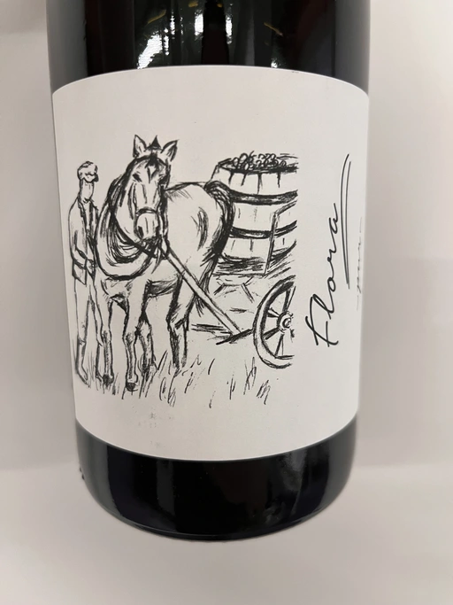

- Type
- Red Still, Dry
- Producer
- Brand Bros
- Vintage
- NV
- Location
- Germany, Pfälzer Landwein
- Grapes
- Dornfelder, Blauer Portugieser
- Alcohol
- 10.5
- Sugar
- 0.5
- Price
- 555 UAH, 630 UAH
- Cellar
- N/A
Ratings
2023-01-19 - 5.75
Wow, what an awful wine! No, wait. It has some pleasant features, but the faults are so unbearable that it grounds my experience. Wild and unbalanced, it just makes my stomach hurt. Not my cup of drink.
Flora has a yeast-driven bouquet (think of porter beer or Borodino bread) with dark forest berries and chocolate. The palate is narrow with some fruits, but the main problem of this wine is acidity. Seems like MLF was blocked cause it feels like concentrated tart malic acid. And don’t forget about VA, as it knows no rest and haunts you everywhere. I had zero expectations. I opened this bottle out of pure curiosity. Why must it be so cruel to me?
By the way, this is a blend of Dornfelder and Blauer Portugieser. Not sure about the first grape, but the wine ‘clearly’ owes the colours to the second grape.